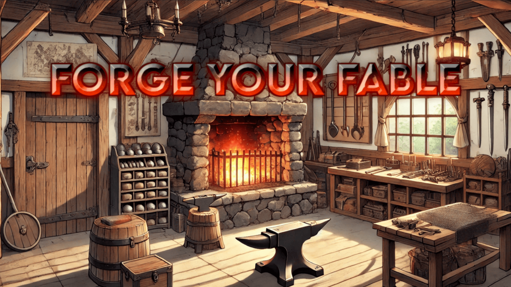

Play Forge Your Fable on Itch.io
Forge Your Fable is a locally-powered AI-driven narrative game that blends the flexibility of interactive fiction with real-time decision-making. Built using the IAMAI plugin, the game features a fully offline AI model that generates dynamic storylines, character interactions, and world-building content in response to player choices. This project highlights my work in AI integration, Unity-based UI design, and creating immersive gameplay through language model interactions.